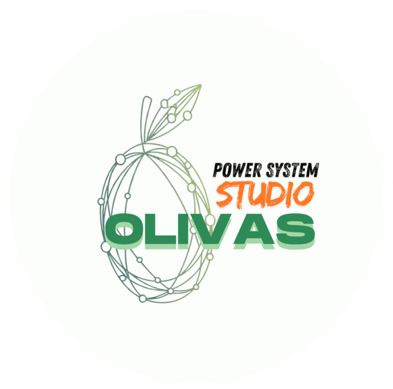

Olivas ATP Studio — ATP Power System Simulation
Olivas ATP Studio oferece três caminhos de execução. Este
guia também é acessível em qualquer momento via tecla
F1 ou Ajuda → Como executar?
Para rodar simulação no solver ATP/EMTP:
.pl4, .lis em
runs/.tpgigg32.exe para casos grandes.
No Esquemático Visual, clique no botão verde ▶ Executar Análise da toolbar (ou menu Análise).
| Análise | Pré-requisitos | Norma |
|---|---|---|
| Estudo completo do barramento | BUS no esquemático | IEC 60909 + IEEE 1584 + NBR 17227 |
| Curto-circuito | BUS no esquemático | IEC 60909-0:2016 |
| Fluxo de potência | Topologia + Slack/PV/PQ | Newton-Raphson |
| Partida de motor | BUS + MOTOR | IEEE 399 §10 |
| Arc-flash | BUS configurado | NBR 17227 / IEEE 1584 |
Menu Exemplos oferece 6 worked examples com esquemáticos pré-preenchidos:
Cada exemplo carrega o esquemático .sch no editor visual + executa o cálculo + exibe relatório expected vs computed.
O componente BUS representa um barramento elétrico com metadata específica para arc-flash + coordenação:
Adicione via Paleta → BUS, ou nos exemplos das normas que já o trazem configurado.
Para habilitar o assistente Claude no editor visual e no chat global:
sk-ant-...) e teste.Olivas ATP Studio — ATP Power System Simulation — Doutorado UFMG